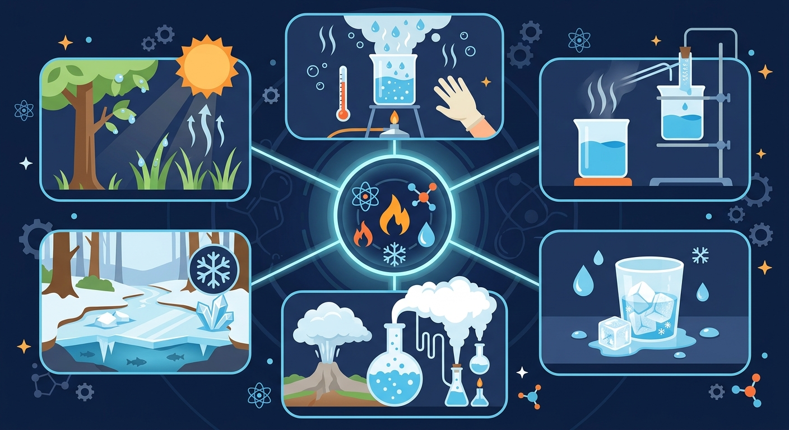

固态、液态、气态——同一种物质的三种面孔。温度一变，它们就会互相转化！

用 ABT 框架探索物质三态之谜
水可以结冰，冰可以融化成水。锅里烧开水时，会冒出白白的水蒸气。这些你每天都能见到。
为什么冰块放在手心会融化？为什么湿衣服晾干后，水"消失"了？同一种物质，为什么能有三种完全不同的样子？
探索物质的三态——固态、液态、气态——和它们之间的六种变化方式，揭开温度控制物质状态的秘密！
5个场景 · 22秒 · 从分子视角看三态变化
三种状态，三种不同的分子排列方式
| 特性 | 🧊 固态 | 💧 液态 | 💨 气态 |
|---|---|---|---|
| 形状 | ✅ 固定 | ❌ 不固定 | ❌ 不固定 |
| 体积 | ✅ 固定 | ✅ 固定 | ❌ 不固定 |
| 分子间距 | 紧密 | 适中 | 很大 |
| 流动性 | 不能 | 可以 | 自由扩散 |
拖动温度滑块，实时观察水分子的状态变化！
拖动下方滑块调节温度，分子会实时显示固态/液态/气态的运动方式
温度是三态变化的"开关"——升温让物质变稀散，降温让物质变紧密
将下方物质拖拽到对应的固态/液态/气态区域，完成后点击检查
先独立作答，再点选项查看对错与错因。
冰棍滴水现象说明发生了哪种物态变化？
下列哪项最能解释0℃冰棍和25℃糖水的区别？
冰箱里的冰块形状变化属于：
冰棍从固态变成液态需要____热量（填吸收/放出）
答案：吸收
熔化是吸热过程
水在____℃时开始结冰（填数字）
答案：0
水的凝固点是0℃
关于物态变化的正确说法是：
将相同大小的冰块分别放在密闭盒子和开口盘子中，记录1小时后的变化
❓ 冰棍放久了为什么变小了？
❓ 水烧开时冒的白气是水蒸气吗？
❓ 干冰和普通冰有什么区别？
学完这一课，这些问题你都能自信地回答。
🎯 能说出物质三态的基本特征
🎯 能判断六种物态变化的类型
🎯 能分析生活中常见的物态变化现象
用分子运动模型解释三态差异
状态变化本质是分子间作用力和运动速度的改变
对比蒸发与沸腾的异同点
观察干冰升华产生的白雾现象
解释冰箱冷冻室结霜的原理
✅ 白气是液态小水滴
💡 混淆气态和微小液滴
✅ 固态直接变气态
💡 忽视课本特例（如干冰）
口诀：固液气三态变，吸热放热记两边
类比：学生就像分子：排队（固态）、课间（液态）、放学（气态）
下列属于液化现象的是？
水沸腾时温度保持在？
识别：说出「sci-e-solid-liquid-gas」中最重要的三个关键词，并写出它们的含义。
解释与比较：解释「sci-e-solid-liquid-gas」的核心结论，比较它与一个相近概念的区别。
运用与计算：把结论代入一个具体例子，求出结果或做出判断。
设计与创造：设计一个新情境，验证这个结论是否依然成立，并说明理由。
（中考题）下列物态变化吸热的是？
用物态变化解释人工降雨原理
冬季窗户冰花的形成过程是？
点击选项作答，查看解析
把今天学到的装进记忆背包
形状固定，体积固定
分子排列紧密
形状随容器变
体积固定
形状和体积都不固定
充满整个容器
熔化/凝固/汽化
液化/升华/凝华